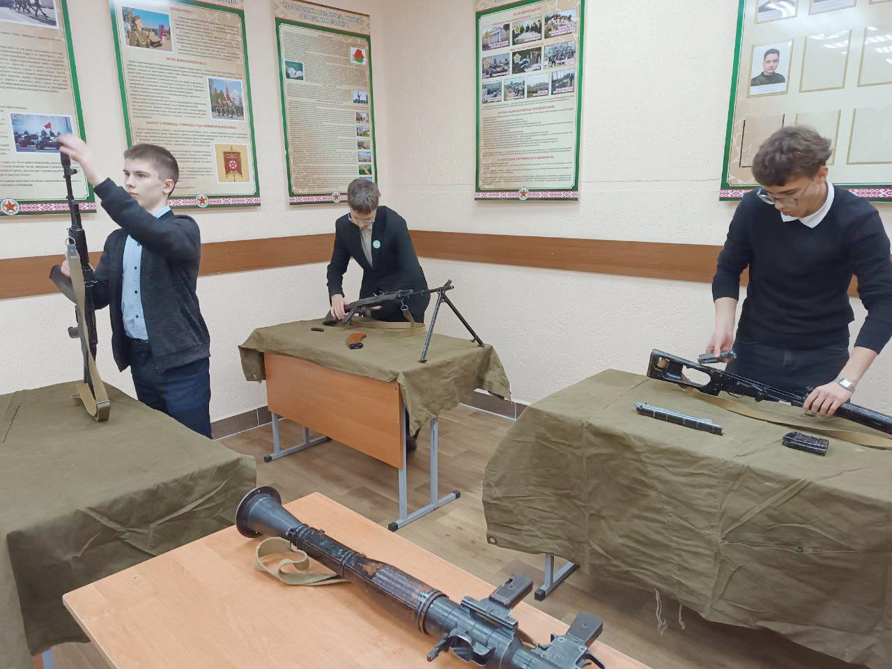
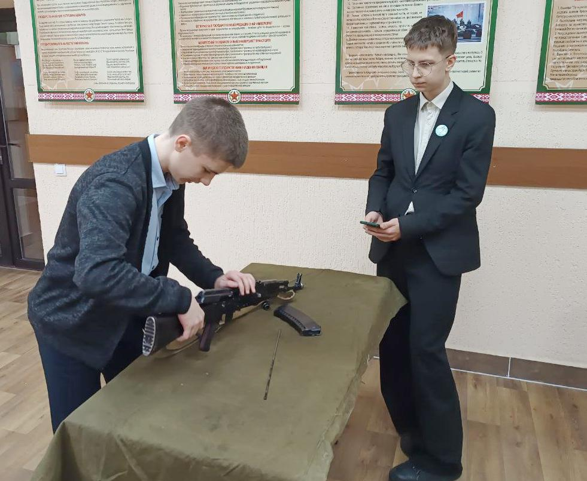
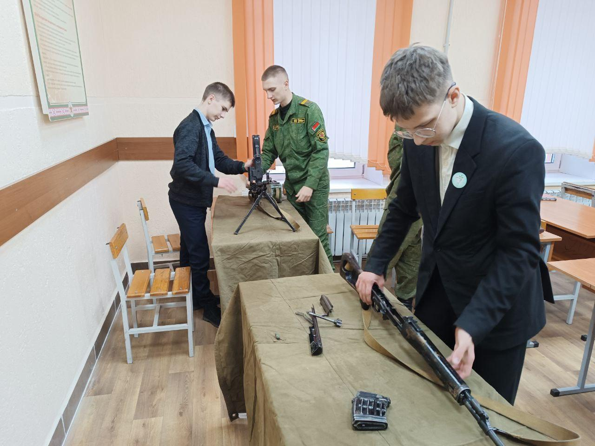
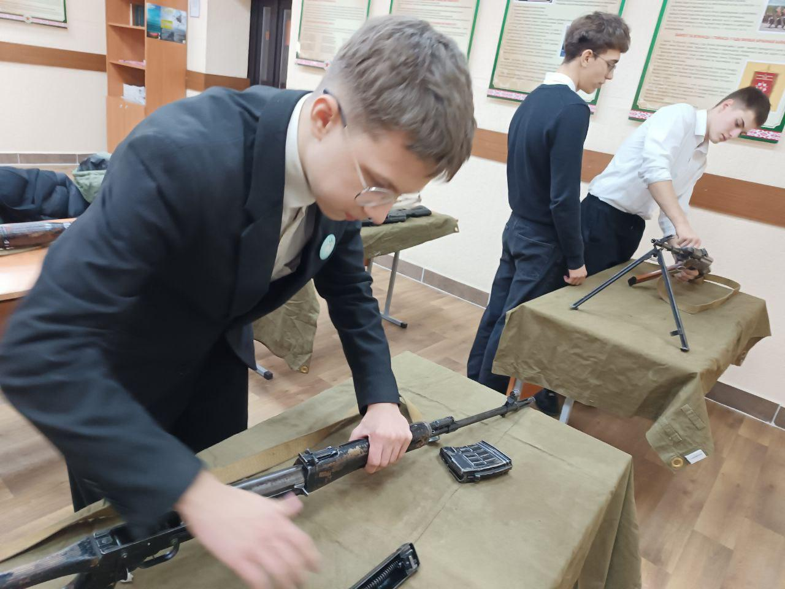
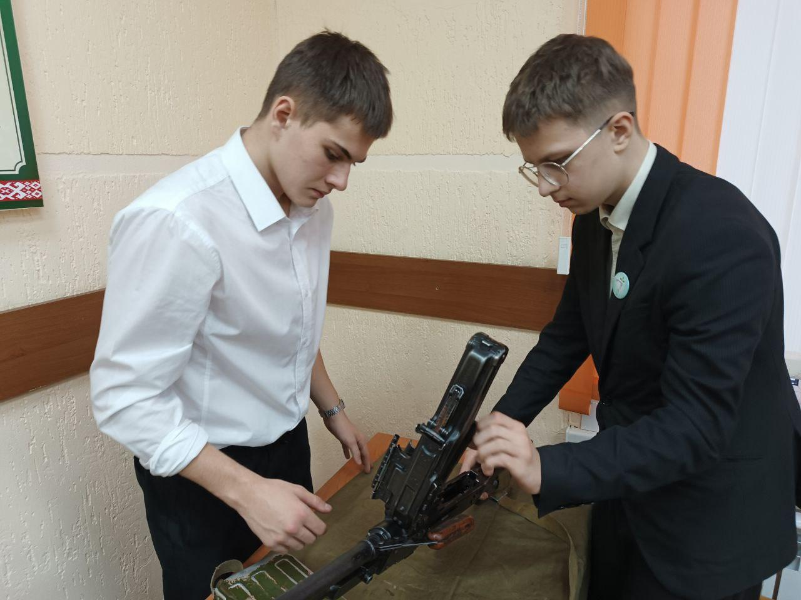
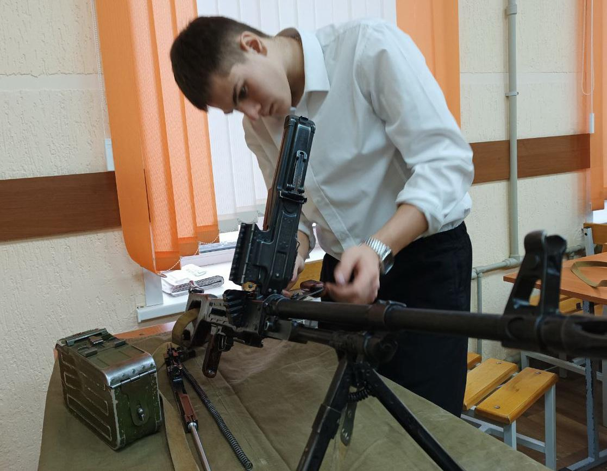

ОСВАИВАЕМ СТРЕЛКОВОЕ ОРУЖИЕ!
Сезон практических занятий, которые будут проводиться на базе воинских частей Борисовского гарнизона и центра допризывной подготовки, открылся 25 ноября в объединении по интересам «Юнармеец». Первое занятие, посвященное изучению стрелкового оружия, прошло на базе 307 гв. школы подготовки специалистов мотострелковых и десантных подразделений.



В ходе занятия юнармейцы познакомились с назначением, общим устройством и тактико-техническими характеристиками автомата АК-74, пулеметов РПК-74 и ПКМ, снайперской винтовки СВД и ручного гранатомета РПГ-7, практически выполнили нормативы по их неполной разборке и сборке. Особое внимание в ходе занятия было обращено на выполнение норматива по неполной разборке и сборке автомата Калашникова, который является одним из элементов военно-спортивной игры «Орленок». Порадовали и результаты занятия, так все юнармейцы выполнили норматив в два раза быстрее времени, установленного в учебной программе по учебному предмету «Допризывная и медицинская подготовка», а Степан Линник и Матфей Мытько вложились во время не превышающее 50 секунд.


